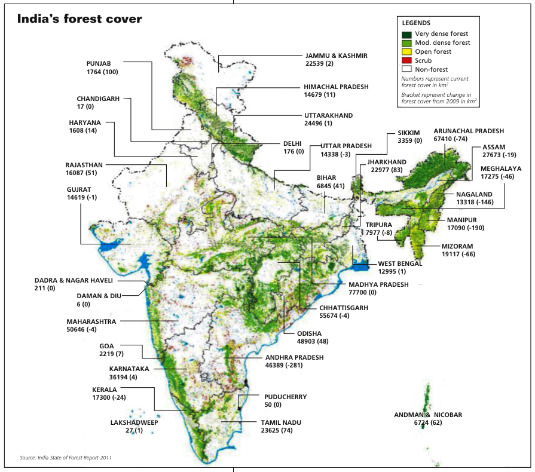

|  |

Data Description :
The data refers to State-wise (2009 onwards), All India (2000 onwards) data on forest cover of the Country
by type of forests w.r.t total geographical area, it has also data on actual forests cover by density
classes such as dense forest, open forest, mangrove, serub, Non-forest.
Released Under: National Data Sharing and Accessibility Policy (NDSAP)
Contributor: Ministry of Statistics and Programme Implementation
Published on Data Portal: 22/04/2016
State/Union Territory [India]
[0] Andhra Pradesh
[1] Arunachal Pradesh
[2] Assam
[3] Bihar
[4] Chhattisgarh
[5] Delhi
[6] Goa
[7] Gujarat
[8] Haryana
[9] Himachal Pradesh
[10] Jammu & Kashmir
[11] Jharkhand
[12] Karnataka
[13] Kerala
[14] Madhya Pradesh
[15] Maharashtra
[16] Manipur
[17] Meghalaya
|
[18] Mizoram
[19] Nagaland
[20] Orissa
[21] Punjab
[22] Rajasthan
[23] Sikkim
[24] Tamil Nadu
[25] Telangana
[26] Tripura
[27] Uttar Pradesh
[28] Uttarakhand
[29] West Bengal
[30] A.& N. Islands
[31] Chandigarh
[32] D.& N. Haveli
[33] Daman & Diu
[34] Lakshadweep
|
|